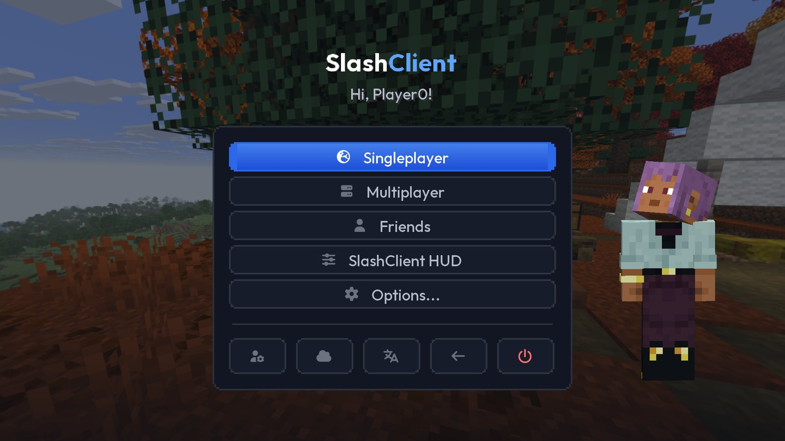
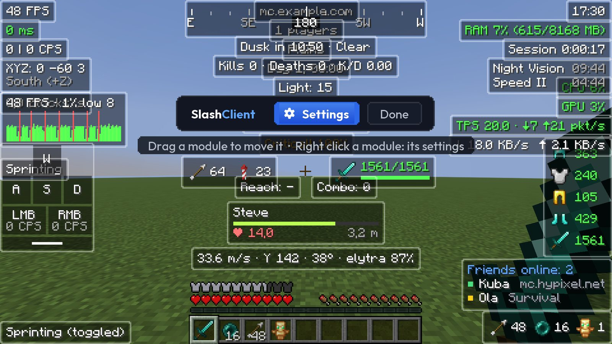
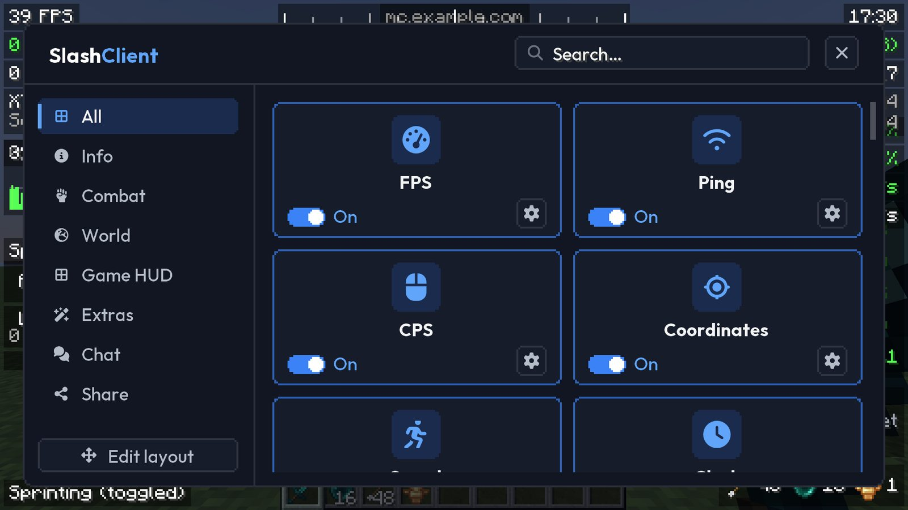
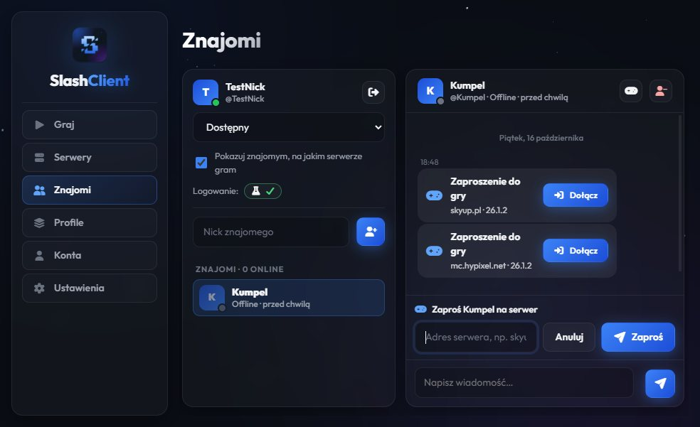
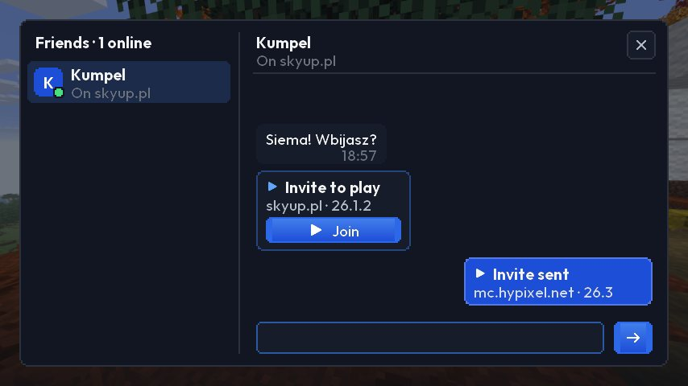
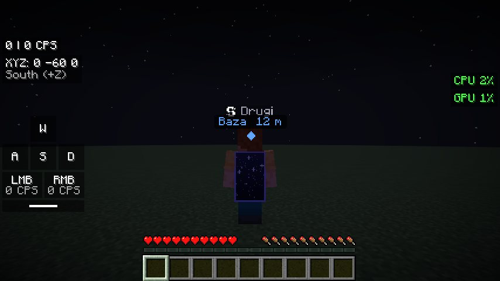
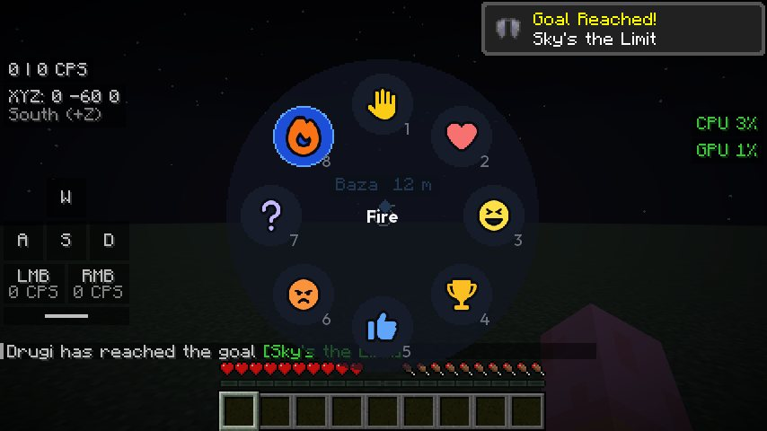
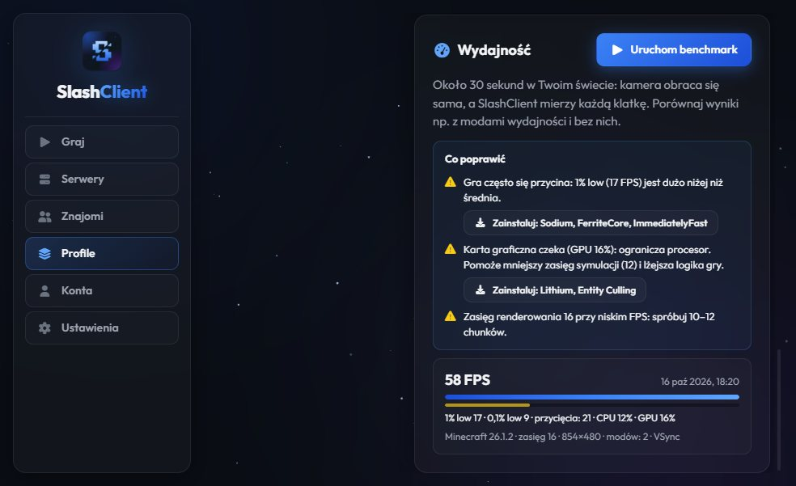
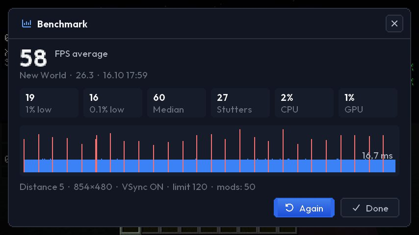
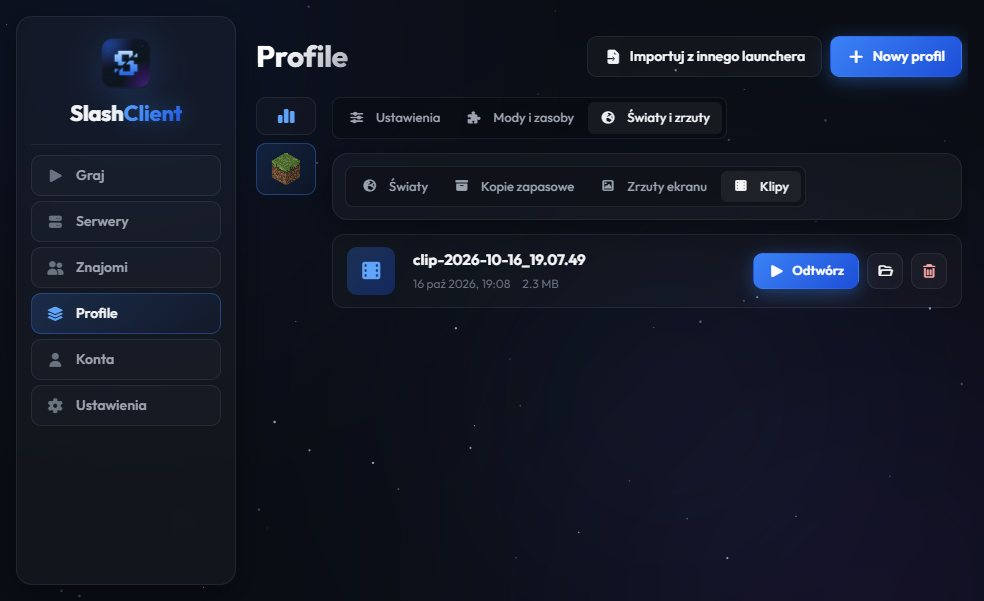

Minecraft, tylko lepiej.
Darmowy launcher z własnym HUD-em, znajomymi i zaproszeniami do gry, pelerynami widocznymi dla innych, benchmarkiem i klipami. Wszystko w jednym, bez szukania modów.

Wszystko, czego potrzebujesz do gry
To, co zwykle wymaga kilku modów i programów, jest od razu w launcherze.
HUD, który ustawisz po swojemu
FPS, ping, CPS, zbroja, efekty, klawisze, kompas, licznik zabójstw i dziesiątki innych modułów. Przeciągasz je myszką, zmieniasz kolory i rozmiar, a gotowy układ udostępniasz znajomym jednym kodem.
- Edytor przeciągnij-upuść z siatką
- Celowniki, zoom, freelook, fullbright
- Zakładki czatu z filtrami i wyszukiwaniem


Grajcie razem, bez przepisywania adresów
Widzisz, kto jest online i na jakim serwerze gra. Piszesz w launcherze albo prosto z gry, a „Zaproś” wysyła znajomemu przycisk „Dołącz”. Jeśli jego gra już działa, sama przeniesie go na Twój serwer.
- Logowanie przez Discord, Microsoft, Google lub GitHub
- Czat w launcherze i w grze (klawisz O)
- Logo SlashClient przy nicku innych graczy


Peleryny i emotki, które widzą inni
Wybierz jedną z peleryn SlashClient. Zobaczą ją wszyscy gracze z launcherem, na każdym serwerze, także na elytrze. Pod klawiszem N jest koło emotek, które pojawiają się nad Twoją głową.
Wybierz pelerynę

Zmierz FPS i dowiedz się, co je zjada
30-sekundowy benchmark w Twoim świecie mierzy każdą klatkę: średnią, 1% low i przycięcia. Launcher porównuje wyniki i podpowiada, co poprawić; brakujące mody wydajności instalujesz jednym kliknięciem.
- Wykres czasów klatek i porównanie przebiegów
- Porady: VSync, CPU czy GPU, pamięć, zasięg
- Sodium, Lithium i spółka jednym przyciskiem


Złap ten moment klawiszem F8
Gra trzyma w pamięci ostatnie sekundy, a F8 zapisuje je jako film, bez OBS-a i dodatkowych programów. Klipy znajdziesz w launcherze przy profilu.

Każdy moduł, jakiego szukasz
Launcher, który robi resztę za Ciebie
Częste pytania
Gotowy na lepszego Minecrafta?
Pobierz SlashClient za darmo i zagraj w kilka minut.